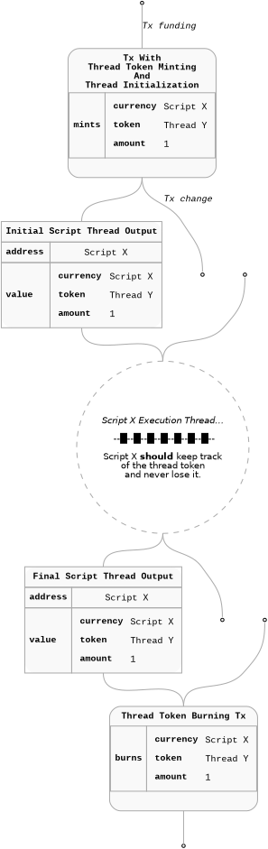

Data Availability
Let's build up a minimal Marlowe contract request structure first.
The goal is to make it useful in the data sharing context. We will then
move to the security aspect of the data sharing and later on we will
dive into the specifics of the datum and the contract state which should
be used by the external on-chain data consumers. Some elements of this
scheme require slight extensions to the current Marlowe validator (but
not the Language) and its tooling. We will indicate those elements in
the spec.
Marlowe Oracle Request
Minimal Marlowe Request
As already discussed a minimal protocol request consists of two
constructs a Choice and a Payout. This
structure provides oracle harvester ability to easily detect requests on
the chain together with a guarantee of the reward payment.

On its own this contract structure is not a reliable from the other
data consumers point of view. Marlowe validator enforces removal of the
contract thread UTxO together with the state and choices from the
blockchain when a contract reaches its execution end. For example if we
consider the above contract alone the data point will disappear from the
chain together with transaction in which it is provided. We just reach
the Close step together with the Choice and
Pay in the same on-chain transaction - Pay and
Close are evaluated "eagerly" after the Choice
suspension point (they are not suspension points on themselves).
Marlowe Oracle
Request with Enforced Delay
Marlowe provides ways to enforce a delay of the contract execution in
a predictable way. The ability to suspend contract can be used to
provide guarantees for the consumers that the contract state will be
present on the chain for a certain amount of time.

We propose to use this extra separate step as a basis of a reliable
data sharing protocol. This step can follow a Choice and
Pay steps directly or be used as some future step in the
contract following them. What is important is that the delay is
unconditionally present on all the following execution paths. An
important detail is that all possible timeouts present int the contract
are adjusted accordingly. The one which relates to the oracle
Choice step should be appropriately distanced from the
final delay so the overall interval during which the data are available
on the chain is fully specified. Additionally all the timeouts in the
following contract which precede the delay step should be larger then
the its expected deadline.

UTxO Level Publishing
Cardano provides a way to "use" UTxO in a transaction without
consuming it. It is enough to add such a UTxO to the reference input set
of a transaction. Through this mechanism cross smart contract
communication and data sharing is possible. It does not involve direct
interaction with the smart contract which possibly sits at the
referenced UTxO level (the UTxO can be also a regular address based one)
- this script is not executed when an input is referenced. On the other
hand validators involved in the transaction which references a
particular input can inspect it - read its datum, value or check the
output address without consuming the other contract input.
This mechanism is used by existing oracle provides on Cardano and
enables access to a published data point. Data points are usually
approved using an oracle signature under a data point structure and this
tuple is included in a UTxO.
FIXME: check/consult this point with the Charlie3
and Orcfax docs.

As discussed previously data point is visible on chain as long as the
UTxO is not consumed. There seem to be no standard cross oracle standard
regarding those aspects of the protocols. Signed data points provide a
bit more flexibility as they separate publisher from the data provider
and possibly can be republish by anybody on the chain. Of course the
described publishing strategy on its own does not directly provide a way
to enforce payment in exchange for the access to the information. In
many cases publishing is driven by an up front payment through off-chain
channels and is specific to the oracle provider. Some oracles also
publish some data for free rather regularly.
Marlowe Based Data
Publishing
Let's look at the UTxO level overview of the Marlowe data publishing
process. Marlowe extends the above flow with a preliminary data point
request and subsequent reward payout for the oracle. It can optionally
include enforced delay on the contract level to also become a data feed
for some other consumers.

At the end the data are provided to the consumers through the datum
in similar fashion to the publishing feeds but they won't include any
extra signature so authenticity of the data has to be proven using some
other means which we discuss below.
Cross-Marlowe Choice Sharing
FIXME: Should we drop this section and move it to a
separate MIP and discussion page?
In the current version of the Marlowe validator it is impossible to
use choice value from the other instance of Marlowe. We could imagine
that on the validator level choice value is read from another Marlowe
contract UTxOs as described above but in such a case the choice name
which is used to identify that choice should uniquely identify the query
in a cross-contract fashion. This is exactly the nature of oracle
choices described in this document. It seems that in order to properly
implement such a feature we should introduce to the language itself a
notion of a ChoiceId which is "globally" unique. To do so
we probably have to introduce ChoiceName to the
language:
data ChoiceName = LocalChoiceName String | GloballyUniqueChoiceName String
data ChoiceId = ChoiceId ChoiceName Party
Authenticity Of The Data
Forging Marlowe Choice
On the UTxO level Marlowe validator ensures that the transaction
which delivers the choice value was signed by a key corresponding to the
party from the contract. After that step every Marlowe thread UTxO
protects and keeps that choice together with the party information and
value in a map in the datum.

Even though Marlowe validator manages that information carefully so
it is copied from the inputs to the transaction outputs we can not
really be sure that the original information was actually verified in
the first place. On the Cardano blockchain it is possible to create an
arbitrary output. Malicious actor Eve could easily fake previously
presented output just by publishing a transaction with precisely crafted
output:

The above scheme is possible because the transaction which Eve
constructed does not involve Marlowe validator execution at all!
Additionally the choice itself which is stored in the datum is not
paired with the data provider signature so she can actually create an
arbitrary data point and pair it with arbitrary Party
(represented by public key hash in our case).
Thread Token
In order to fix the above problem we could significantly change the
validator and require an extra signature to be provided and stored
together with the data point.
FIXME: Optional comment: There is a MIP which
proposes introduction of "Signed Choices" but even with this extension
we don't plan to store the actual signatures in the Marlowe state. The
authenticity of the value will be again implied by the execution
itself.
Another option is to introduce a data verification step execution
proof. If we could prove that the choice which is stored in the contract
state was actually verified by Marlowe validator in some previous
transaction then any consumer could trust the data without checking the
transaction history which is impossible to perform on-chain. In order to
do so we can use the concept of a thread token coupled
together with preconditions checking.
Cardano ledger guarantees that tokens of a specific asset class can
be minted only by a script which hashes to that asset class value. In
other words token existence is a proof that a specific script was
successfully executed in some past transaction. Thanks to CIP-0069
we can use a single script to validate minting and spending which is
really convenient - we can have a single script and token identifier
which when present together on a UTxO can indicate a valid thread of
execution. The essence of the thread token pattern flow is captured in
the diagram below:

The final scheme consists of three properties of the script which
implements it:
The script should allow minting a single unique token only if it
is outputted to a UTxO where spending validator has the same hash as its
own.
The script when validating spending should check if the token of
its own currency is passed to the output which contains the same
spending validator.
Additionally the script should allow burning on both spending and
minting levels when there is no continuing execution thread
output.
Thread Token as a
Proof Of Marlowe Execution
The pattern described above when introduced to the current Marlowe
validator together with an additional precondition checking could be a
basis for a reliable data authenticity verification scheme. The
precondition which should be check during the initial minting in this
case is that the initial choice map in the Marlowe state is empty. Given
this initial check we can imply that:
Marlowe token is only present at a UTxO if the initial
precondition was checked because Marlowe never leaks the thread token,
burns it at the end and performs the actual check during
minting.
Given some choice in the Marlowe state at the Marlowe UTxO which
contains the thread token we can be sure that the choice verification
step was executed because the initial state was checked and was
empty.

Please note that we can ignore the exact thread identifier - it can
be useful in some context but the scheme allows us to trust choices
stored in the Marlowe state relying on a single Marlowe validator hash
which should be reflected on the spending validator level and the thread
token as well. Additionally this trust scheme is Marlowe contract
agnostic really. It can be used outside of the Marlowe Oracle Protocol
context!
Marlowe Datum Encoding
Notes and TODO
Trustless data sharing
Marlowe does not support signed data requests in the current
version. This protocol version proposes to use standard Marlowe approach
to data authenticity verification. Marlowe checks signature under the
transaction which delivers a particular choice.
Marlowe provide a way to authorize a steps like choice using
token witness scheme but usage of that approach is outside of the scope
of this spec.
When a choice is delivered Marlowe keeps it in the map which
associates particular public key and choice name with the value. This
piece of data can be easily accessed by other contracts.
Because the data themselves are not signed, other contracts can
not directly verify the authenticity of the data.
As mentioned above Marlowe validator performs verification on its
own but UTxO at validator address with correct datum is not a proper
proof of execution.
On the other hand during proper can be used as already validated if
we can prove that the validation step was actually performed. It is
possible to artificially create arbitrary UTxO on the chain


More advanced data sharing with specific
data ChoiceId = ChoiceId ChoiceName Party
How
the results of particular instances of data requests are identified,
both within and outside running Marlowe contracts.
The security
model assumed by the oracle protocol.
Brainstorm:
Marlowe is an interpreted language on the chain. Given a Marlowe
contract with some state and assets plus the Marlowe interpreter, it is
safe to assume (Plutus implmentation of the interpreter was audited)
that the Marlowe contract will be executed as specified by the language
semantics and the state and assets will be updated correctly.
On the chain the above elements are tight to a UTxO:
- address should point to an official Marlowe interpreter script,
- datum should contain Marlowe contract and state
- assets locked in the UTxO should be the assets used in the Marlowe
contract (plus minimum ADA).
Marlowe is expressed using different formats:
- On the blockchain level the
Contract and the state by
necessity is represented as Plutus core data values (https://plutus.cardano.intersectmbo.org/resources/plutus-core-spec.pdf
# section 4.3.1.1).
- On the cross language API level and tooling level we use
Json or Yaml interchangeably. We try to keep
that format human readable and easy to use.
- There is a Haskell derived DSL syntax which is used in some tools
(e.g. Marlowe Playground) and in specs. We don't want to discard this
case because we expect that this format will be replaced by a proper
language in the future versions.
We provide a set of tools and APIs which translate those formats.
The data format is the lowest level format and the precise
spec for it
Beside the lower level spec of the format we will provide for
TypeScript and Haskell reference implementations:
- decoders into a JSON format of the Datum
- libraries which will provide functions which allow indentification
of possible oracle requests (Idea: maybe on chain we should require at
least some prefix before the hash that suggest that a given choice is
possibly an oracle request.)
Marlowe Plutus data
Encoding
TODO:
- UTxO level diagram:
- Clean up the data point usage script and redeemer - unify it with
the above diagram?
- Make the Tx headers human friendly - drop the tx ids and use
readable names
- Drop margins from the UTxO level diagrams.
- Drop tx funding utxos?